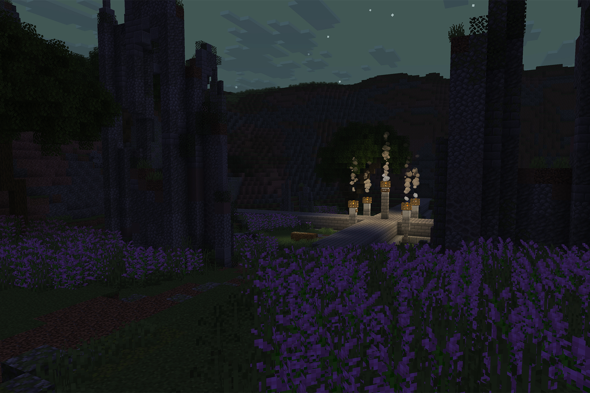

Anthology is a collection of Complete the Monument (CTM) maps for modern Minecraft, created by artist and graphic designer Joey Sweener.
Evoking the classic feeling of CTM maps from Minecraft's heyday, each map features a unique world filled with intricate dungeons and structures, where players must survive however they can in search of the Victory Monument. Minimal but tasteful use of data- and resource-packs enhances the gameplay and aesthetic experience, while never straying too far from standard survival Minecraft.
The first of three planned maps is currently in development.
